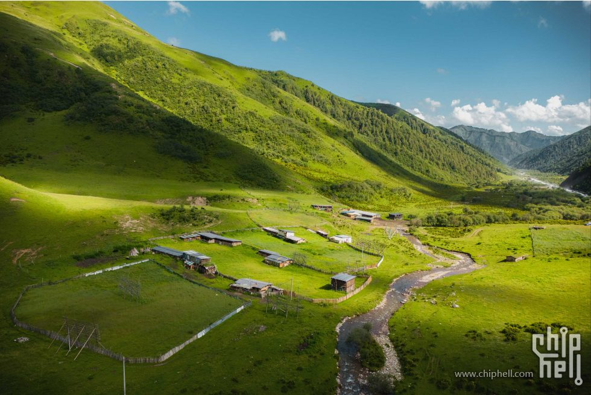
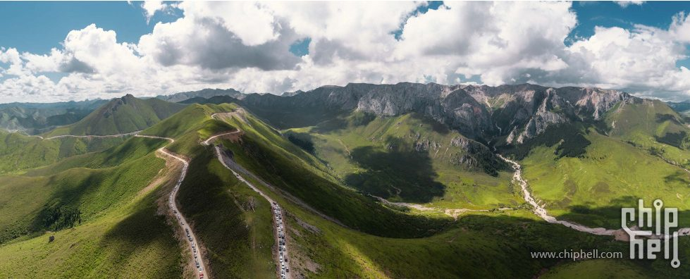
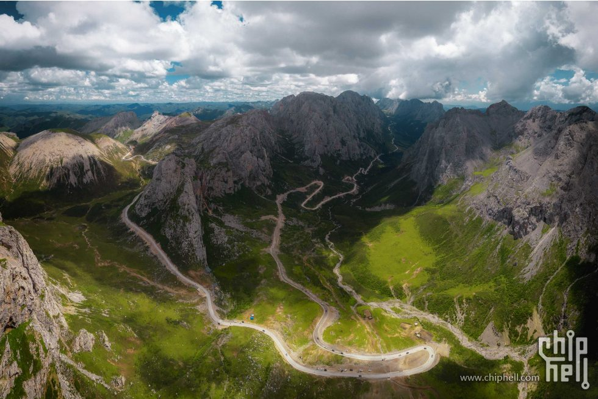
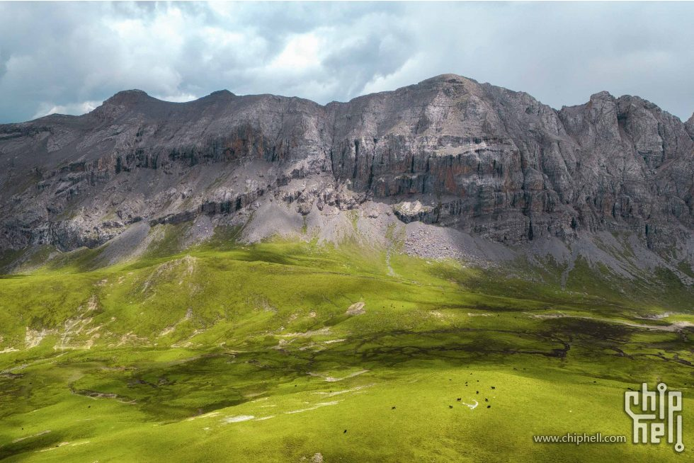

甘肃省博物馆建议 2-3 小时；玩法：直奔铜奔马、彩陶、丝路展，提前预约小红书搜图

天气更新于 2026 年 7 月 12 日 18:50，按路书中各景点实际坐标调用 Open-Meteo 预报。气温为单点当日最高/最低，降水概率为单点日最大值；D4 以后仍属中远期预报，建议每天出发前复核一次。
穿衣原则：全程按“短袖/速干内层 + 防晒层 + 抓绒或薄羽绒 + 冲锋衣/雨衣”分层准备。兰州、临夏白天偏热，高海拔草原和莲宝叶则早晚冷、风大、雨来得快。
| 日期 | 天数 | 住宿 | 主要路线 | 天气/温度参考 | 穿衣建议 | 随身重点 | 节奏判断 |
|---|---|---|---|---|---|---|---|
| 7/18 周六 | D1 | 全季酒店(兰州张掖路省政府地铁站店) | 兰州中川机场 → 甘肃省博物馆 → 中山桥 → 全季酒店 | 29高15低 兰州市区 阴 29/18℃ · 降水 22%中川机场 小雨 27/15℃ · 阵风 50km/h | 市区白天短袖/薄长袖；落地机场风大，黄河边和晚上加薄外套。 | 防晒帽、轻薄外套、舒适步行鞋 | 航班到达后轻松适应 |
| 7/19 周日 | D2 | 卓尼扎古录大酒店 | 全季酒店 → 美仁大草原 → 合作米拉日巴佛阁 → 卓尼扎古录大酒店 | 22高4低 美仁草原 小雨 17/7℃ · 降水 37%合作佛阁 晴间多云 22/9℃扎古录 晴间多云 20/4℃ | 温差很大：草原和扎古录夜间加抓绒/薄羽绒，车内按长袖轻装。 | 防风外套、抓绒、墨镜、防晒霜 | 正常长途日，约 5h 驾驶 |
| 7/20 周一 | D3 | 云端山舍·全域日出观景民宿(扎尕那达日观景台店) | 卓尼扎古录大酒店 → 达日观景台 → 云端山舍 | 20高8低 达日观景台 小雨 20/8℃ · 降水 51%扎尕那 小雨 20/11℃ · 降水 54% | 速干长袖 + 抓绒/薄羽绒 + 冲锋衣，山路湿滑，观景台按低温风大准备。 | 雨衣、防滑鞋、保暖帽 | 看天气，避免夜走洛克之路 |
| 7/21 周二 | D4 | 郎木寺庚盼民宿(白龙江峡谷店) | 云端山舍 → 扎尕那仙女滩 → 格尔底寺 → 纳摩大峡谷 → 郎木寺庚盼民宿 | 18高9低 扎尕那仙女滩 阵雨 13/9℃ · 阵风 43km/h郎木寺 阵雨 18/9℃ · 降水 41% | 清晨按 10℃ 以下体感准备抓绒/薄羽绒；峡谷全程带防风防雨层。 | 冲锋衣、轻便徒步鞋、保暖帽 | 雨风偏强，仙女滩按天气缩时 |
| 7/22 周三 | D5 | 朵兰达V酒店(阿坝县店) | 郎木寺庚盼民宿 → 花湖 → 黄河九曲第一湾 → 朵兰达V酒店 | 19高9低 花湖 小雨 15/9℃ · 降水 47%黄河九曲 小雨 16/9℃ · 降水 37%阿坝县 小雨 19/12℃ · 降水 47% | 花湖和九曲只有约 15-16℃，长袖外加防风层；雨后及时补抓绒/薄羽绒。 | 防晒、雨具、保温杯 | 可行，但别等九曲完整日落 |
| 7/23 周四 | D6 | 久治玉宫酒店 | 朵兰达V酒店 → 莲宝叶则 → 各莫寺 → 久治玉宫酒店 | 19高4低 莲宝叶则 小雨 15/6℃ · 降水 51%各莫寺 小雨 13/4℃久治 小雨 19/6℃ | 全程最冷的一天：抓绒/薄羽绒 + 冲锋衣，莲宝叶则按 6℃、有雨和有风准备。 | 保暖层、手套/帽子、雨衣 | 景区日，注意高海拔 |
| 7/24 周五 | D7 | 夏河蓝庭雅居酒店 | 久治玉宫酒店 → 娘玛寺 → 阿万仓 → 郭莽 → 桑科 → 蓝庭雅居酒店 | 19高10低 阿万仓 阵雨 13/10℃ · 阵风 34km/h郭莽湿地 小雨 14/10℃ · 阵风 38km/h桑科/夏河 小雨 17/11℃ → 19/13℃ | 湿地沿线约 13-17℃且风大，车内轻便，下车加抓绒和防风雨外套。 | 防风外套、雨具、备用袜子 | 高德约 336.6km/5h26m，雨天按 8-9h 安排 |
| 7/25 周六 | D8 | 临夏八坊十三巷美仑酒店 | 蓝庭雅居酒店 → 拉卜楞寺 → 甘加秘境 → 临夏八坊十三巷美仑酒店 | 29高8低 拉卜楞寺 阴 22/10℃ · 降水 42%甘加秘境 小雨 17/8℃ · 降水 75%临夏 多云 29/16℃ | 甘加按 8-17℃和雨天穿，抵达临夏后明显升温，可脱到短袖/薄长袖。 | 雨具、防晒帽、抓绒 | 甘加降水概率高，核实开放和路况 |
| 7/26 周日 | D9 | 返程 | 临夏八坊十三巷美仑酒店 → 黄洮交汇观景平台 → 兰州中川机场 T3 | 30高20低 黄洮交汇 小雨 30/20℃ · 降水 27%中川机场 阴 29/21℃ · 阵风 51km/h | 白天偏热，以短袖/薄长袖为主；机场风大，备一件轻薄防风外套。 | 防风外套、易脱鞋/舒适鞋 | 17:55 航班，13:00 前离开观景平台 |
| 天数 | 日期 | 酒店 | 房型与间数 | 价格 |
|---|---|---|---|---|
| D0 | 7-17 | 全季酒店(兰州张掖路省政府地铁站店) | 双床房A【安静舒睡 + 商务…】 1间 | ¥363.70 × 1间 |
| D1 | 7-18 | 全季酒店(兰州张掖路省政府地铁站店) | 双床房【舒适安睡 + 商务…】 1间 高级大床房A【安静舒睡】 2间 | ¥441.42 × 1间 ¥414.02 × 1间 + ¥216.01 × 1间 |
| D2 | 7-19 | 卓尼扎古录大酒店 | 特惠双床房（一次性面巾 + 一次性浴巾） 3间 | ¥398.33 × 3间 |
| D3 | 7-20 | 云端山舍·全域日出观景民宿(扎尕那达日观景台店) | 栖山｜观景双床房 1间 枕山｜观景双床房 2间 | ¥854 × 1间 ¥813 × 2间 |
| D4 | 7-21 | 郎木寺庚盼民宿(白龙江峡谷店) | 郎木寺观景｜豪华标间 2间 郎木寺观景｜标间 1间 | ¥475.48 × 2间 ¥404.55 × 1间 |
| D5 | 7-22 | 朵兰达V酒店(阿坝县店) | Senior·静谧双床房（智能客控 + 空调 + 制氧机 + 加湿器） 1间 智能语音大床房 2间 | ¥534 × 1间 ¥447 × 2间 |
| D6 | 7-23 | 久治玉宫酒店 | 豪华双床房（医用级鼻吸供氧） 3间 | ¥471 × 3间 |
| D7 | 7-24 | 夏河蓝庭雅居酒店 | 豪华双床房 3间 | ¥450 × 3间 |
| D8 | 7-25 | 临夏八坊十三巷美仑酒店 | 大床房 3间 | ¥378.73 × 3间 |
| 住宿订单合计（D0-D8） | ¥11792.85 | |||
| 类型 | 优先玩 | 各自亮点 | 可舍弃/短停 | 取舍建议 |
|---|---|---|---|---|
| 高山峡谷/大景 | 莲宝叶则、扎尕那、洛克之路 | 莲宝叶则看高海拔海子和石山；扎尕那看石城村落、晨雾和观景台；洛克之路胜在路上山谷、垭口和穿越感 | 甘加秘境 | 天气好优先莲宝叶则和扎尕那；洛克之路遇雨雾降级为安全通过；甘加秘境开放不稳或赶路时可舍弃 |
| 草原/湿地 | 花湖、阿万仓湿地 | 花湖有栈道、湖面和水鸟，体验完整；阿万仓湿地视野开阔，适合 D7 长线中段舒展 | 美仁大草原、郭莽湿地、桑科草原 | 同类不要贪多。保花湖和阿万仓；美仁、郭莽、桑科都按路边短停处理，天色晚直接跳过 |
| 寺庙/藏地人文 | 拉卜楞寺、郎木寺/格尔底寺 | 拉卜楞寺体量最大，转经长廊和讲解最值得；郎木寺兼具小镇、寺院和纳摩大峡谷 | 米拉日巴佛阁、各莫寺、娘玛寺 | 人文重点放拉卜楞寺和郎木寺；米拉日巴适合 D2 顺路登阁；各莫寺、娘玛寺作为短停，不占用莲宝叶则/D7 主时间 |
| 观景台/日落 | 达日观景台、黄河九曲第一湾 | 达日适合看扎尕那全景；黄河九曲适合高位看河湾，天气好很出片 | 黄洮交汇观景平台 | D3 保达日；D5 住阿坝则九曲下午看完就走，不为日落冒夜路；D9 黄洮只在时间宽裕、天气好时短停 |
| 城市轻量点 | 甘肃省博物馆、中山桥 | 博物馆看铜奔马和彩陶，适合落地第一天；中山桥适合饭后散步看黄河 | 中山桥 | D1 若航班延误或太累，优先保博物馆预约；中山桥可缩短到 20-30 分钟或取消 |
总原则：自然大景看天气，寺庙人文看讲解和体力，草原湿地同质化高，保 1-2 个代表点就够。
海拔为近似值，用来判断身体适应节奏；实际以当天停车点和道路为准。
| 路段/节点 | 海拔参考 | 判断 |
|---|---|---|
| 兰州/中川机场 | 约 1500-1950m | 入门适应段，第一天别熬夜 |
| 合作、扎古录、扎尕那、郎木寺 | 约 2550-3400m | D2-D4 持续抬升，夜间注意保暖和睡眠 |
| 花湖、黄河九曲、阿坝县 | 约 3290-3450m | D5 全天在 3300m 左右活动，别把日落拖成夜路 |
| 莲宝叶则 | 约 4200-4520m | 全程最高点，少走快路、少跑跳，身体不适及时下撤 |
| 久治、阿万仓、郭莽、夏河 | 约 2920-3630m | D7 仍是高海拔长驾驶日，控制停留和体力 |
| 临夏、返程机场 | 约 1900m | 海拔明显下降，适合返程前恢复 |
| 日期 | 景点 | 提前时间 | 购票/预约渠道 | 票价参考 | 备注 |
|---|---|---|---|---|---|
| D1 | 甘肃省博物馆 | 提前 3 天含当天，通常 0 点放票 | 微信公众号“甘肃省博物馆/这里是甘博”个人预约，官网扫码预约 | 免费 | 周一闭馆，刷身份证入馆；7/18 为周六，仍建议提前约好下午时段 |
| D2 | 美仁大草原 | 不需提前 | 开放式草原，现场停车/消费 | 免费 | 停车、骑马、牧家乐等另计 |
| D2 | 安多合作米拉日巴佛阁 | 当天即可 | 现场窗口，携程/去哪儿可查实时信息 | 登阁约 20 元，停车约 5 元 | 宗教场所现场公告优先 |
| D3 | 洛克之路、达日观景台 | 不购票；出发前 1 天查路况 | 卓尼/迭部文旅、酒店、当地司机、高德路况 | 免费/无统一门票 | 雨雾、塌方、修路比门票更关键，低底盘车谨慎 |
| D3-D4 | 扎尕那 | 旺季建议提前 1-3 天 | 扎尕那官方入口、甘南文旅相关入口、去哪儿/携程 | 成人约 80 元，优待约 40 元 | 暑期可能分时预约或限流，现场票不稳时以线上为准 |
| D4 | 格尔底寺/郎木寺 | 当天即可 | 现场购票 | 格尔底寺/郎木寺区域约 30 元 | 甘肃赛赤寺、四川格尔底寺分属两侧，收费口径可能不同 |
| D4 | 纳摩大峡谷 | 当天即可 | 通常随格尔底寺入口进入，现场确认 | 寺庙入口约 30 元；峡谷本身多为免费 | 骑马、向导等另计；遇雨不建议深入峡谷 |
| D5 | 花湖湿地 | 至少提前 1 天 | 去哪儿/携程/同程，景区公众号或现场 | 门票+观光车成人约 105 元，学生约 70 元 | 浙江免票政策本行程默认不适用；观光车另付 |
| D5 | 黄河九曲第一湾 | 至少提前 1 天 | 去哪儿/携程/同程，景区公众号或现场 | 门票+上行观光扶梯成人约 105 元，学生约 90 元 | 浙江免票政策本行程默认不适用；扶梯/观光车另付 |
| D6 | 莲宝叶则 | 建议提前 1 天；旺季好天气提前 2-3 天 | 去哪儿/携程/同程，景区公众号或窗口 | 成人约 120 元，老人/学生约 60 元 | 高海拔景区，按天气和体力安排 |
| D6 | 各莫寺 | 不需提前 | 现场参观 | 免费 | 主殿/室内区域开放时段以现场为准 |
| D7 | 娘玛寺 | 不需提前 | 现场参观 | 免费 | 寺院参观注意着装、拍照和宗教礼仪 |
| D7 | 阿万仓湿地 | 当天或提前 1 天查询 | 现场/票务平台/玛曲文旅信息 | 核心观景台/景区参考约 30 元；外围湿地可能免费 | 官方曾公布试行价，实际按现场收费口径为准 |
| D7 | 郭莽湿地 | 不需提前 | 开放式湿地，现场停车 | 免费 | G213 旁短停点，控制停留时间 |
| D7 | 桑科草原 | 不需提前 | 开放式草原，现场消费 | 免费 | 骑马、藏服、牧家乐、停车等另计 |
| D8 | 拉卜楞寺 | 通常不需线上提前；上午到现场更稳 | 现场窗口/寺院讲解点 | 主殿区约 40 元，贡唐宝塔约 10-20 元；公共区域免费 | 建议请讲解；法会、修缮、宗教活动会影响开放 |
| D8 | 甘加秘境 | 至少提前 1 天，出发前再确认开放范围 | 去哪儿/携程/同程，景区公众号或窗口 | 门票+园内交通成人约 118 元，优待约 78 元 | 甘加秘境历史上有停开/改造公告，务必核实交通和可游区域 |
| D9 | 黄洮交汇观景平台 | 不需提前 | 开放式观景点，现场停车 | 免费/现场为准 | 返程航班日只建议短停，遇堵车或下雨直接去机场 |
路线：兰州中川国际机场 → 甘肃省博物馆 → 中山桥 → 全季酒店(兰州张掖路省政府地铁站店) 航班：3U3195 07:20-10:25 住宿：兰州市 酒店：全季酒店(兰州张掖路省政府地铁站店)
| 时间 | 安排 |
|---|---|
| 10:25-12:00 | 抵达兰州中川机场，取车，检查轮胎、油量、ETC/导航、备胎和玻璃水。 |
| 12:00-13:30 | 机场到兰州市区，午餐可安排牛肉面。 |
| 14:00-17:00 | 甘肃省博物馆，重点看马踏飞燕、丝路文明、彩陶。 |
| 17:30-19:00 | 中山桥和黄河风情线散步，天气好可看白塔山方向夜景。 |
| 晚上 | 入住全季酒店(兰州张掖路省政府地铁站店)，市区晚餐，补充水和路餐。 |
注意：甘肃省博物馆通常需实名预约，周一闭馆；7/18 为周六，仍建议提前预约并确认停止入馆时间。中山桥为开放式城市景点，雨大或堵车时可缩短停留。
路线：全季酒店(兰州张掖路省政府地铁站店) → 美仁大草原 → 安多合作米拉日巴佛阁 → 卓尼扎古录大酒店 住宿：扎古录镇 酒店：卓尼扎古录大酒店
| 时间 | 安排 |
|---|---|
| 08:00 | 全季酒店早餐后出发，加满油。 |
| 11:30-12:30 | 美仁大草原短停拍照，午餐建议简单解决。 |
| 13:30-15:30 | 合作米拉日巴佛阁，留 1-1.5 小时。 |
| 16:00-18:00 | 前往扎古录入住，尽量天黑前到。 |
建议：美仁大草原不要停太久；扎古录住宿选择少，确认停车、热水、是否有电梯。
路线：卓尼扎古录大酒店 → 达日观景台 → 云端山舍·全域日出观景民宿(扎尕那达日观景台店) 住宿：扎尕那景区内 酒店：云端山舍·全域日出观景民宿(扎尕那达日观景台店)




| 时间 | 安排 |
|---|---|
| 08:00 | 从卓尼扎古录大酒店出发，先确认天气和路况。 |
| 上午 | 洛克之路，重点是路上山谷、垭口、草甸风景。 |
| 中午 | 视路况用路餐，不要把午餐寄托在景区。 |
| 下午 | 达日观景台，继续前往扎尕那方向。 |
| 17:00 前 | 抵达云端山舍·全域日出观景民宿，天气好可看日落。 |
注意：洛克之路雨天、雾天、塌方/修路时风险会上升；低底盘车不建议硬走，尽量 SUV，离线地图和满油出发。
路线：云端山舍·全域日出观景民宿(扎尕那达日观景台店) → 扎尕那仙女滩 → 格尔底寺 → 纳摩大峡谷 → 郎木寺庚盼民宿(白龙江峡谷店) 住宿：郎木寺镇 酒店：郎木寺庚盼民宿(白龙江峡谷店)


| 时间 | 安排 |
|---|---|
| 05:30-08:00 | 天气好可看扎尕那晨雾/日出。 |
| 08:30-11:30 | 扎尕那仙女滩和村落观景点补拍。 |
| 12:00-14:00 | 午餐后前往郎木寺方向。 |
| 14:00-17:30 | 格尔底寺、纳摩大峡谷轻徒步。 |
| 晚上 | 入住郎木寺庚盼民宿(白龙江峡谷店)，注意保暖。 |
路线：郎木寺庚盼民宿(白龙江峡谷店) → 花湖湿地 → 黄河九曲第一湾 → 朵兰达V酒店(阿坝县店) 住宿：阿坝县 酒店：朵兰达V酒店(阿坝县店)
| 时间 | 安排 |
|---|---|
| 08:00 | 从郎木寺庚盼民宿出发。 |
| 08:45-11:30 | 花湖湿地，坐观光车/走栈道，注意防晒和风。 |
| 11:30-13:00 | 前往唐克方向，路上午餐。 |
| 13:00-16:00 | 黄河九曲第一湾，下午打卡观景。 |
| 16:00 前后 | 离开九曲前往阿坝县。 |
| 18:30-19:30 | 抵达朵兰达V酒店(阿坝县店)入住。 |
关键取舍：如果特别想看黄河九曲日落，建议改住唐克/若尔盖；若坚持住阿坝，不建议等完整日落后夜路前往阿坝。
路线：朵兰达V酒店(阿坝县店) → 莲宝叶则景区 → 各莫寺 → 久治玉宫酒店 住宿：久治县 酒店：久治玉宫酒店
| 时间 | 安排 |
|---|---|
| 08:00 | 朵兰达V酒店早餐后出发。 |
| 09:00-14:30 | 莲宝叶则景区，重点看扎尕尔措一线；身体不适则减少徒步。 |
| 15:00-16:00 | 各莫寺短停。 |
| 16:00-18:00 | 前往久治县，入住久治玉宫酒店。 |
注意：莲宝叶则海拔高，别跑跳；带热水、防晒、雨衣和保暖层。
路线：久治玉宫酒店 → 娘玛寺 → 阿万仓湿地 → 郭莽湿地 → 桑科草原 → 夏河蓝庭雅居酒店 住宿：夏河县 酒店：夏河蓝庭雅居酒店 高德参考：约 336.6km / 5h26m；实时路况和 POI 命中会浮动，实际按 8-9h 总行程预留。


| 时间 | 安排 |
|---|---|
| 07:30-08:00 | 久治玉宫酒店出发，提前加油，准备路餐。 |
| 上午 | 娘玛寺、阿万仓湿地，作为当天重点。 |
| 中午 | 玛曲/碌曲方向路餐或简餐。 |
| 下午 | 郭莽湿地短停，桑科草原路过拍照。 |
| 18:00-19:00 | 抵达夏河蓝庭雅居酒店入住。 |
建议：D7 不要每个点都深玩；如果天气差或司机疲劳，优先放弃桑科草原停留，保证天黑前到夏河。
路线：夏河蓝庭雅居酒店 → 拉卜楞寺 → 甘加秘境 → 临夏八坊十三巷美仑酒店 住宿：临夏市 酒店：临夏八坊十三巷美仑酒店
| 时间 | 安排 |
|---|---|
| 08:00-11:30 | 拉卜楞寺，建议请讲解或跟随寺院讲解路线。 |
| 11:30-12:30 | 夏河县午餐。 |
| 12:30-16:30 | 甘加秘境/八角城/白石崖方向，根据开放范围调整。 |
| 16:30-18:30 | 前往临夏八坊十三巷美仑酒店入住。 |
注意：甘加秘境出发前 1-2 天再核实；如核心区受限，改为八角城遗址观景台、白石崖寺和甘加草原路景。
路线：临夏八坊十三巷美仑酒店 → 黄洮交汇观景平台 → 兰州中川国际机场 T3 航站楼 航班：MU2446 17:55-20:40
| 时间 | 安排 |
|---|---|
| 上午 | 临夏八坊十三巷美仑酒店早餐，可视时间逛八坊十三巷。 |
| 11:00-12:30 | 黄洮交汇观景平台，停留 30-45 分钟即可。 |
| 13:00 前 | 必须离开观景平台前往中川机场。 |
| 15:00 左右 | 到机场还车，留足加油、还车、安检时间。 |
如果返程当天遇雨、堵车或身体疲劳，建议取消黄洮交汇，直接去机场。